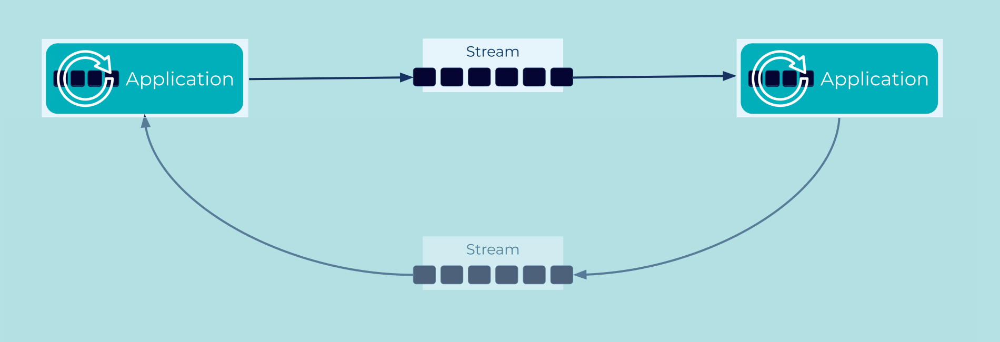
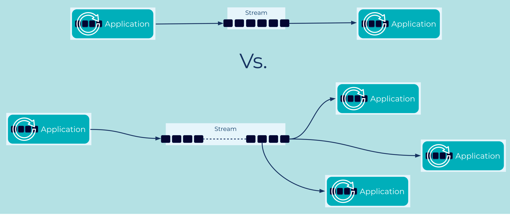

Command Event
The Events in our systems often seem to fall into two categories: messages and commands.
Message-like events resemble simple facts - a user sends us their new address, a product leaves the warehouse - and we record those facts first, without immediately considering what happens next.
Other events seem more like commands to invoke a specific action - a
user clicks a [BUY] button - and it's time to trigger order
processing.
How do we model command-like events?
Problem
How can an Event Streaming Platform be used to invoke a procedure in another application?
Solution

Separate out the function call into a service that writes an event to an Event Stream, detailing the action we need to take and its arguments. Then write a separate service that watches for that event before invoking the procedure.
Typically a Command Event is dispatched in a fire-and-forget manner. The writer assumes the event will be handled correctly, and responsibility for monitoring and error-handling lies elsewhere in the system. This is very similar to the Actor model. Actors have an inbox; we write messages to that inbox and trust they'll be handled in due course.
If a return value is explicitly required, the downstream service can write a result event back to a second stream. Correlating Command Events with their return value is typically handled with a Correlation Identifier .
Implementation
Suppose we have a [BUY] button that should trigger a
dispatchProduct(12005) function call in our warehousing
system. Rather than calling the function directly, we can split the
call up as a command stream:
CREATE STREAM dispatch_products (
order_id BIGINT KEY,
address VARCHAR
) WITH (
KAFKA_TOPIC = ' dispatch_products',
VALUE_FORMAT = 'AVRO',
PARTITIONS = 2
);
Some process that inserts into that stream:
INSERT INTO dispatch_products ( order_id, address ) VALUES ( 12004, '1 Streetford Road' );
INSERT INTO dispatch_products ( order_id, address ) VALUES ( 12005, '2 Roadford Avenue' );
INSERT INTO dispatch_products ( order_id, address ) VALUES ( 12006, '3 Avenue Fordstreet' );
And a second process that watches the stream of events and invokes the
dispatchProduct procedure foreach:
...
Serde<GenericRecord> valueGenericAvroSerde = ...
StreamsBuilder builder = new StreamsBuilder();
KStream<Long, GenericRecord> dispatchStream = builder.stream(
"dispatch_products",
Consumed.with(Serdes.Long(), valueGenericAvroSerde)
);
dispatchStream.foreach((key, value) -> warehouse.dispatchProduct(key, value));
Considerations
This approach is fine and it works, but it may be a missed opportunity to improved the overall architecture.
Consider what happens when we need more actions. Suppose that [BUY]
should also trigger an email and a text notification to the customer.
Should the warehouse software finish its work and then write
SendEmail and SendText commands to two new topics? Or should
these two new events be written by the same process that wrote DispatchProduct?
Then a month later, when we need our sales figures, should we count
the number of products dispatched or the number of emails sent?
Perhaps both, to check they agree?
The system grows a little more and we have to ask, how much code is
behind that [BUY] button? What's the release cycle? Is changing it
becoming a blocker? [BUY] is important to the whole company, and
rightly so, but its maintenance shouldn't hold the company to ransom.
The root problem here is that in moving from a function call within a monolith to a system that posts a specific command to a specific recipient, we've decoupled the function call without decoupling the underlying concepts. When we do that, the architecture hits back with growing pains1.
The real solution is to realize our "Command Event" is actually two concepts woven together: "What happened?" and "Who cares?"
By teasing those concepts apart, we can clean up our architecture. We
allow one process to focus on recording the facts of what happened,
while other processes decide for themselves if they care.
When the [BUY] click happens, we should just write an Order
event. Then warehousing, notifications and sales can choose to react,
without any need to coordinate.

In short, commands are tightly coupled to an audience of one, whereas an event should just be a decoupled fact, available for anyone who's interested. Commands aren't bad per se, but they are a flag that signals an opportunity for further decoupling.
Seeing systems this way requires a slight shift of perspective - a new way of modeling our processes - and opens up the opportunity for systems that collaborate more easily while actually taking on less individual responsibility.
References
- This can approach become complex if there is a chain of functions, where the result of one is fed into the arguments of the next. In that situation, consider using Event Collaboration.
- See Designing Event Driven Systems - "Chapter 5: Events: A Basis for Collaboration" for further discussion
- This pattern is derived from Command Message in Enterprise Integration Patterns by Gregor Hohpe and Bobby Woolf
Footnotes
1 It's at that point that someone in the team will say, "We were better off just calling the function directly." And if we stopped there, they'd have a fair point.